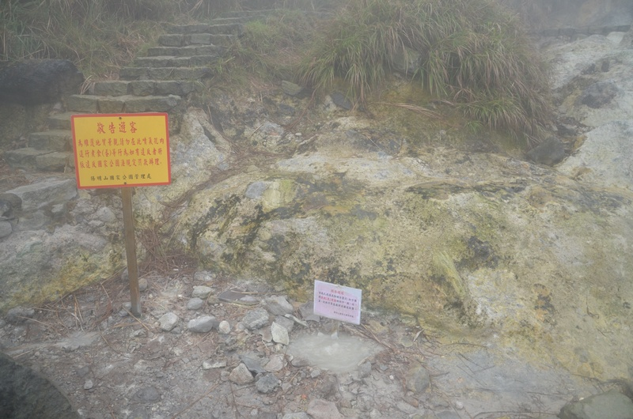
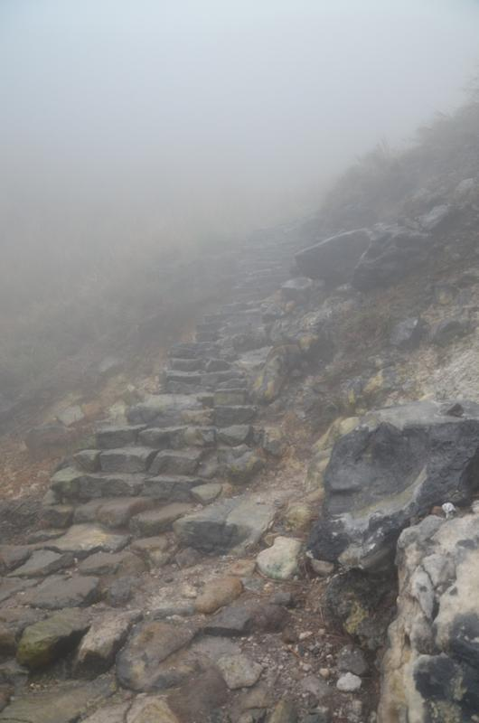
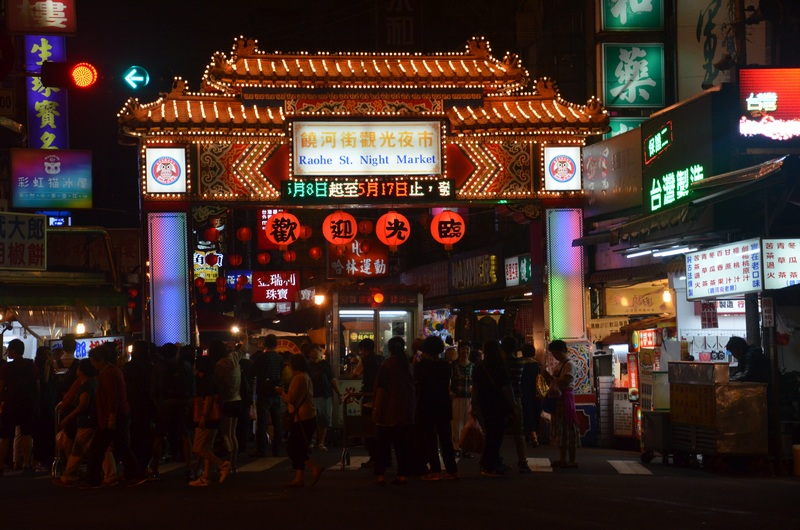
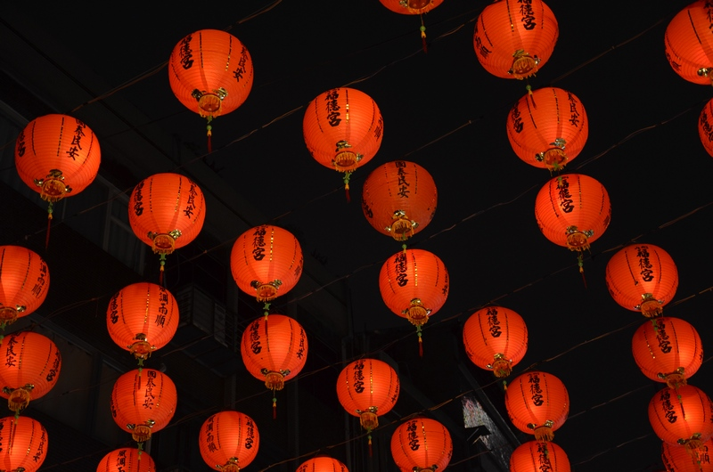
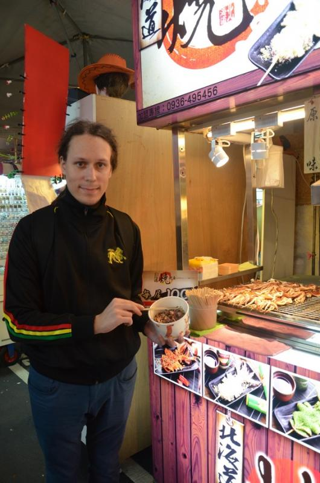
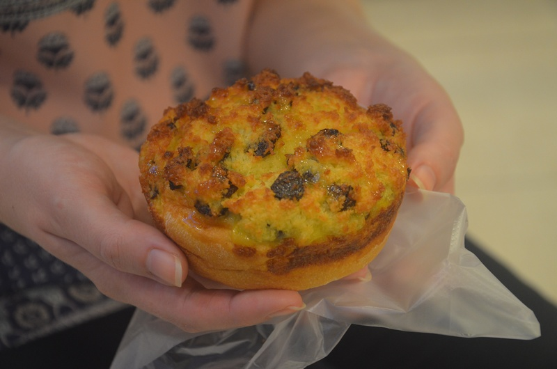

Pobyt v (sub) tropické zemi jsem si opravdu užívala. Nejen že jsme za sebou v Čechách nechali sychravé listopadové počasí, ale vyhovovala mi i místní vysoká vlhkost, díky níž se mi na Taiwanu velice dobře dýchalo. Místní klima mělo ovšem i své stinné stránky… Třeba tu, že jsem se po první noci vzbudila s dredem na hlavě. A zaboha se nedal rozčesat, byť jsem si na hlavu lila hektolitry kondicionéru. (O mých útrapách s vlasy si asi brzy počtete v rubrice DROGa.) Tím to ale nekončilo. Dalším následkem vysoké vlhkosti bylo třeba to, že se nám zkroutily cestovní pasy nebo rozlepily papírové krabičky. A vyprané oblečení tady usušíte až v okamžiku, kdy si ho vezmete na sebe :D
V pondělí jsme se každopádně museli připravit na lehkou změnu počasí - vyrazili jsme totiž do národního parku Yangminshan, který se sice nachází hned za branami Taipei, nicméně leží v zalesněných horách, které sahají do nadmořské výšky 1120 m. Park vznikl vulkanickou aktivitou, což vysvětluje obrovskou koncentraci horkých (sirných) pramenů v této oblasti. Nejen, že to tady hezky bublá, ale taky to tu pěkně smrdí po síře :D Každopádně když vás ovane horký výpar, je to moc příjemné - obzvlášť pokud vás tu také zastihne déšť a mlha jako nás.

Bublající prameny
V Yangminshanu nám počasí opravdu nepřálo - přestože dole v Taipei bylo příjemně, sotva jsme vyjeli nahoru, všechno se zahalilo do husté mlhy a nebylo vidět na krok.

Mlha přede mnou, mlha za mnou
Z původního plánu jít túru na vrchol Mt Qixing tedy nakonec sešlo, protože bychom se slibovanými panoramaty stejně nepokochali. Rozhodli jsme se tedy vrátit zpátky do města a zpravit si náladu na nejstarším nočním trhu v Taipei na Raohe Street.

Noční trh na Raohe Street
Raohe mě naprosto nadchlo! Tolik různých jídel a nápojů na jednom místě, že jsme nevěděli, co zkusit dřív. A protože jsme sem dorazili docela hladoví, zkusili jsme toho skutečně dost :D!

Lampiony
Já začala naprosto neasijsky waflí, po které následovala grilovaná chobotnice, mangový džus, neuvěřitelně dobrá a neuvěřitelně zmrzlá mangová zmrzlina, polévka z vepřových žeber, která je prý specialitou tohoto trhu, nebo nápoj ze třtinového cukru. Nakoupili jsme tu také několik suvenýrů, třeba typické taiwanské sladkosti mochi, které se vyrábí z rýžového těsta. A těch krásných ethno obchůdků se soškami, kterých tu měli!

Péťova chobotnička
Na nočních trzích jsme si opravdu pochutnávali. Musím ale dodat, že jsme byli od prvního okamžiku také moc nadšení z místních pekárniček, které nabízí velice pestrý sortiment sladkého i slaného pečiva všemožných příchutí. A všechno vypadá tak lákavě a skoro až francouzsky :D! Taky jsme si moc oblíbili sushi trojhránky z obchodů 7Eleven, které jsme si kupovali jako svačinku na cesty. Vyzkoušeli jsme snad všechny místní druhy :D

Naše první snídaně na Taiwanu
Následující den už nás čekalo rozloučení s Taipei, vyzvednutí auta v půjčovně a naše dobrodružná cesta po ostrově mohla začít…